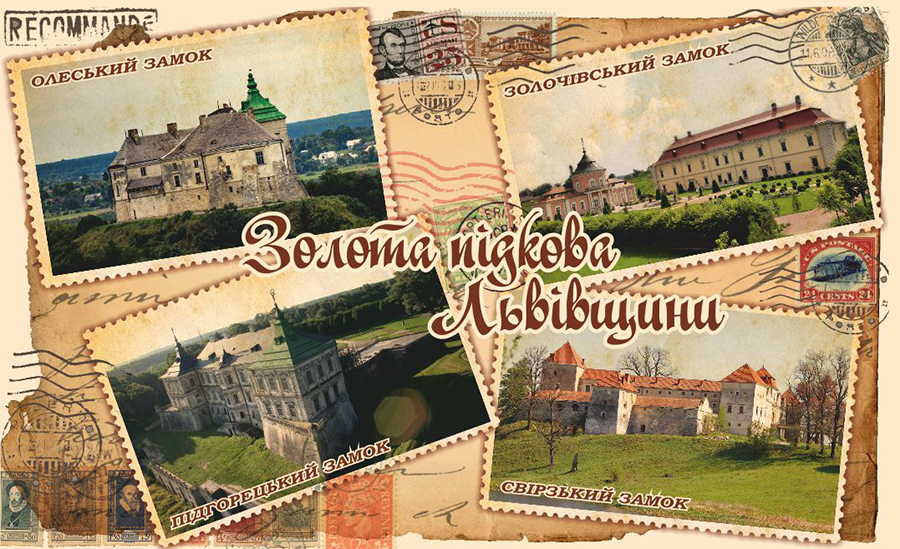
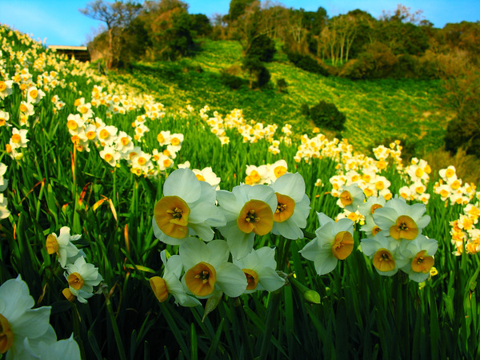
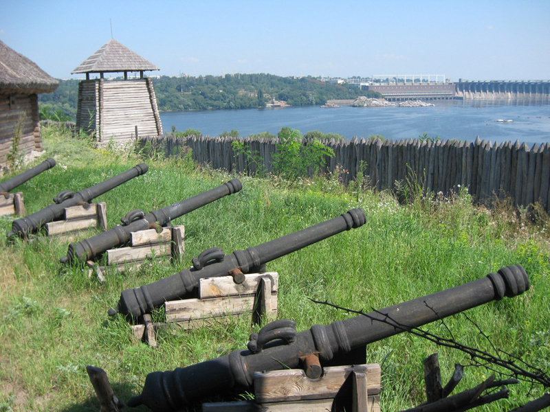
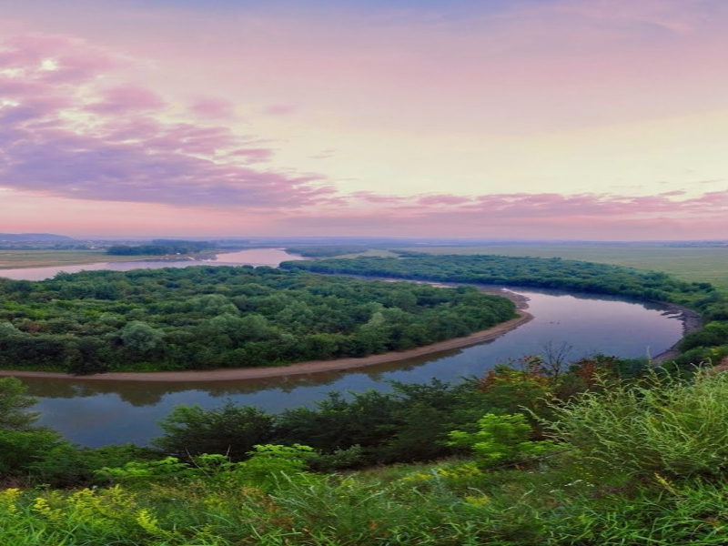
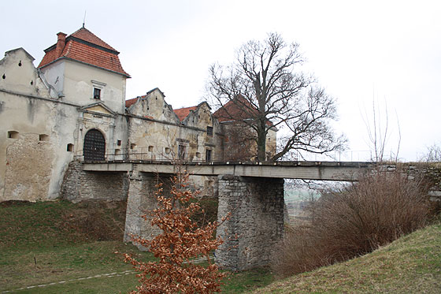
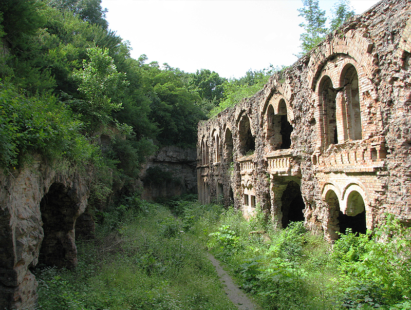
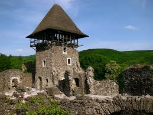

Реєстраційна форма
ЗОЛОТА ПІДКОВА ЛЬВІВЩИНИ
Кожен українець повинен відвідати музей-заповідник XIV-XVIII ст. “Олеський замок”. Замок на пагорбі є одним з найстаріших на українських землях (1390р.), його експозиція відтворює атмосферу культурно-мистецького життя минулих століть, замок славиться однією з найбільших в Європі колекцій дерев’яної скульптури, в т.ч. Іоанна Георгія Пінзеля. Вночі замком гуляють душі закоханих Адама Жолкевського та дочки власника замку Марціани.
Окрасою Олеська є також монастир капуцинів з костелом святого Антонія (1739р.) та готичний костел святої Трійці (1545р.)
Підгорецький замок Конєцпольських з парком (1635р.) колись вважався одним із найгарніших в Європі і є одним із найкращих зразків поєднання ренесансного палацу з бастіонними укріпленнями. Біля замку знаходяться багатодекорований костел святого Йосипа (1763р.), корчма-заїзд та і пивзаводом XVIII ст.
Золочів-надзвичайно багате на пам’ятки місто Західної України, окрасою якого є Золочівський замок (1634р.) з китайським палацом (одним з трьох в Європі). Велику цікавість викликають таємничі камені тамплієрів з двома вінками, які здійснюють таємничі бажання.
План туру:
виїзд зі Львова (09:30) - Олесько (огляд замку) - Підгірці (огляд палацу) - Золочів (огляд замку та обід) - Львів (повернення о 19:00).
Тур проводиться щодня (крім понеділка).
ВАРТІСТЬ ТУРУ ДЛЯ ОРГАНІЗОВАНИХ ГРУП:
Кількість осіб в групі Ціна з групи (у грн.)
від 1 до 6 2932
від 7 до 16 3495
від 17 до 19 3888
від 20 до 25 4420
від 26 до 30 4660
від 31 до 48 5390
У вартість ВХОДИТЬ: проїзд комфортабельним автобусом, супровід гіда-екскурсовода, екскурсійне обслуговування в туристичних об’єктах.
У вартість НЕ ВХОДЯТЬ і додатково оплачуються: вхідні квитки в туристичні об’єкти та харчування.
ВАРТІСТЬ туру для організованих груп обговорюється окремо.
Вартість вхідних квитків:
- Олеський замок: загальний – 30 грн., студенти – 15 грн., учні – 6 грн.
- територія Підгорецького замку: загальний та студенти – 10 грн., учні – 5 грн.;
- Золочівський замок та Великий палац: загальний – 30 грн., студенти – 15 грн., учні – 6 грн.;
- Китайський палац (музей східних цивілізацій): загальний - 24 грн., студенти – 15 грн., учні – 6 грн.;
Замовити тур
НАРЦИСИ І 7 ПЕРЛИН ЗАКАРПАТТЯ
Серед карпатських живописних гір розташувався один з найгарніших і найромантичніших замків країни, наче у казку запрошує Вас мисливський замок графів Шенборнів (1890р.). Він дивиться на Вас 365 вікнами, запрошує через 12 входів у 52 кімнати. Замок оточений гарним парком з багатьма екзотичними рослинами.
Звідки б Ви не наближалися до Мукачево, за десятки кілометрів, на одинокій гостроверхій сопці, як магніт, Вас притягує овіяний легендами і бойовою славою мукачівський замок “Паланок” (XIV ст.). Цей визначний воєнно-архітектурний пам'ятник середньовіччя був збудований для охорони і контролю торгових і військових шляхів. Деякі джерела стверджують, що вже в ІХ-Х ст. на горі було невелике укріплення, збудоване для охорони кордонів Київської Русі за Карпатами. Спорудив замок руський князь Федір Корятович і перетворив його у свою резиденцію. Замкові стіни пам’ятають свою захисницю Ілону Зріні, що проявила дива мужності та героїзму при обороні замку.
Крім потужного замку в Мукачево є ще багато цікавого: каплиця св. Мартина (XIV ст.), жіночий Миколаївський монастир на Чернечій горі (XVIIІ ст.), палац Ракоці (1663р.) та прекрасна зелена ратуша (1903р.).
Якщо хочете відчути себе в іншій країні, де частина людей не розуміють української, російської та англійської, однозначно Вам треба в столицю угорської України - Берегово. Саме місто підготувало для гостей готичний костел Всіх Святих (1370р.), костел реформаторів (XV ст.), “Графський двір” – садиба князя Бетлені (1629р.), величний будинок імперського суду (1908р.) та касино “Золота пава”. Але найбільшою принадою є басейни з унікальною термальною водою, що піднімається з глибини 1600 м. та лікує від 86 хвороб, аналоги їй є лише в Новій Зеландії.
Візитка Закарпаття, всесвітньо відома легендарна долина, на якій протягом 10 днів цвітуть нарциси, популяція котрих залишилася тут ще з льодовикового періоду. Приїзджайте й Ви, бо ніде на землі більше нема такого місця.
Візитною карткою Українських Карпат є незрівнянної краси озеро Синевир, знане ще в народі як “Морське око”, воно вабить до себе мальовничими гірськими пейзажами та чистою кришталевою водою, в якій здавна водиться благородна форель. По середині озера знаходиться невеличкий острівець, на якому зображені легендарні Синь і Вир. Озеро утворилося приблизно 10 000 років назад на висоті 989 метрів і має максимальну глибину 22 метри.
Один з найкрасивіших водоспадів України, що з висоти 15 метрів багатьма заворожуючими каскадами між андезиновими скелями скидає води в мальовничу гірську долину. Водоспад бере свій початок з великого підземного джерела, т.з. “морське око”, в одному з найгарніших місць українських Карпат – полонині Боржава. Проведення часу біля Шипоту чудово допомагає відпочити від цивілізації та дає нові життєві сили.
План туру:
1 день: виїзд зі Львова (08:00) – Санаторій Карпати. Замок Шенборна (екскурсія) – Мукачево (екскурсія замком і обід) – Берегово (купання в термальному басейні, дегустація вин, екскурсія) – Берегівський р-н (ночівля в угорських садибах зеленого туризму, поселення о 21:30).
2 день: сніданок і виїзд (08:00) – Кіреші (огляд долини нарцисів) – озеро Синевир (екскурсія та обід) – водоспад Шипіт – Львів (повернення о 23:00).
Тур проводиться по п'ятницям
На Вас чекають:
- знайомства із історією, звичаями, культурою та релігією мешканців Закарпаття: українцями-русинами (бойками, лемками, долинянами), угорцями та ромами;
- найкращі страви бойківської, угорської, лемківської кухонь;
- найвидатніші історичні пам’ятки краю: замок Шенборна, Мукачівський замок, історичний центр Берегово, загальний огляд Виноградівського, Королевського і Хустського замків, чудові дерев’яні храми;
- краса карпатських гір, озера Синевир, водоспад Шипіт, можливість зробити фото на згадку в наймальовничішому місці Карпат, купання в термальному басейні міста Берегово;
- дегустація найкращих марочних вин Закарпаття у стародавніх винних підвалах та дегустація вин приватних господарів Берегівського району.
У вартість ВХОДИТЬ: проїзд комфортабельним автобусом єврокласу, проживання, супровід гіда-екскурсовода, екскурсійне обслуговування в музеях, страхування на час подорожі.
У вартість НЕ ВХОДЯТЬ і додатково оплачуються: вхідні квитки в музеях, харчування, купання в термальному басейні, дегустація вин.
Вартість вхідних квитків:
- територія замку Шенборна (загальний – 10 грн., учні – 7 грн.);
- Мукачівський замок: дорослі - 20 грн., студенти, пенсіонери - 15 грн., діти до 14 років - 10 грн.;
- новий термальний басейн “Жайворонок” у Берегово: загальний – 140 грн. (в т.ч. оренда шафки), пенсіонери - 120 грн., діти від 120 до 150 см. – 70 грн., діти до 120 см. – безкоштовно;
- дегустація вин (50 грн./особа, екскурсія без споживання вина 25 грн./особа);
- Долина Нарцисів (дорослі - 20 грн., студенти - 15 грн., школярі - 10 грн.);
- озеро “Синевир”: загальний – 15 грн., студенти і школярі – 3 грн.;
- водоспад Шипіт: загальний – 10 грн., діти до 10р. – безкоштовно;
Проживання: затишні садиби сільського туризму Берегівського району, номери: 2-х і 3-х місні.
Харчування:
Сніданок у 1-й день – можна поснідати вдома або взяти з собою канапки, щоб перекусити під час руху автобуса або під час стоянок. Обід у 1-й день – у місті Мукачево в ресторані “Рів’єра” та складається з страв лемківсько-мукачівської кухні: салат “Овочеве асорті”, на перше суп "Левеш", на друге торгоня (домашні макарони особливого приготування) з шишками в грибному соусі, компот, хліб. Вартість 65 грн./особа. Вечеря у 1-й день – в садибах після поселення і складається з страв угорської національної кухні: бограч-гуляш, мадярські голубці, солодощі, вино/палинка, компот. Вартість 55 грн./особа.
Сніданок у 2-й день – в садибах, пропоноване меню: ковбаса, сир, лангош з джемом (схожі на оладки), масло, хліб, кава/чай. Вартість 35 грн./особа. Обід в 2-й день – в ресторані “Колиба” біля озера Синевир і складається з найкращих страв бойківської кухні: салат овочевий, юшка з білими грибами, печена картопля з бринзою, шкварками та домашньою ковбасою, хліб, чай з трав. Вартість 65 грн./особа.
Замовити тур
ВІД ХОРТИЦІ ДО АЗОВСЬКОГО МОРЯ
Петриківка – столиця народного українського живопису, саме в ній зберігаються і розвиваються традиції унікального виду мистецтва – петриківського розпису. Продукція символічно-декоративного малювання виготовляється на основі екологічно чистих високоякісних матеріалів на базі древніх народних традицій регіону. За легендою вважається, що петриківський розпис виник, тому що в Петриківці ніколи не було кріпацтва, люди були вільними, тому могли творити.
В Центрі народного мистецтва “Петриківка” можна оглянути Музей прикладного мистецтва петриківського художнього розпису, виставку-продаж виробів 40-провідних майстрів Петриківки, а також придбати сувеніри за цінами виробника.
Це місто не може похвалитися наявністю китайців та китів, але воно відоме багатьом завдяки прекрасним зразкам українського сакрального будівництва XVIII ст. Саме тут на Вас чекають Успенська церква (1754р.), Миколаївська церква (1757р.) та церква святої Варвари (1756р.), які побудовані в бароковому стилі за кошти китайгородського сотника Павла Семенова.
Кузня України, одне з найбільших промислово розвинутих міст, також, може похвалитися великою кількістю пам’яток. Окрасою Дніпра є Свято-Преображенський собор (1830-1835р.), який за задумом Катерини ІІ будувався для патріарха московського і мав перевищити Собор Петра і Павла в Римі.
Збагатити знання із козацької історії можна в одному з найкращих музеїв України - Дніпровському державному історичному музеї ім. Д.Яворницького.
Привертають увагу також: Потьомкінський палац (1790р.), будинок губернатора (1840р.), будинок Англійського клубу (1890р.). Зимовий театр (1906р.), будинок громадського зібрання (1912р.), Монастирський острів, на якому в 957р. перебувала княгиня Ольга.
В передмісті Дніпра збереглися залишки фортеці Старі Кодаки, яка була побудована французьким інженером де Бопланом і двічі зруйнована козаками, саме про неї сказав Б.Хмельницький “рукою створене, рукою й руйнується”.
Окрасою міста Новомосковськ є шедевр українського дерев’яного будівництва Троїцький собор (1775-1780р.) з дзвіницею, який збудований відомим народним майстром Якимом Погрібняком, за кошти полковника Головатого. Собор майстерно збудований без жодного цвяха, є найбільшою в Україні пам’яткою дерев’яної архітектури, його конструктивне вирішення не має аналогів у світовій архітектурі. Краса Троїцького собору надихала багатьох митців, особливо Олеся Гончара, який описав його в своєму творі “Собор”.
Також в Новомосковську є Самарський Пустинно-Миколаївський монастир (XVII-XVIII ст.), ченці якого активно підтримували козаків в боротьбі за Україну.
Запоріжжя – край козацьких вольностей, перлиною якого є острів Хортиця. Хортиця – мініатюрна країна, на 12-кілометровій довжині якої розташовані всі ландшафтні зони України. На території острова знайдено поселення доби палеоліту, скіфів, сарматів, хозарів, кіммерійців, печенігів, половців, слов’ян. На ній перехрещувалися основні сухопутні та водні торгові шляхи.
Колись на острові було 129 курганів та древні астрономічні обсерваторії. Саме тут на Малій Хортиці Дмитро Байда-Вишневецький збудував у 1552р. замок, від часу Хмельниччини і до зруйнування Січі Хортиця була центром козацького руху. Зараз тут Національний заповідник та історико-культурний комплекс “Запорізька Січ”.
Шанувальники козацької історії можуть оглянути також 700-літній дуб, під яким згідно легенди, запорожці писали листа турецькому султанові. Стовбур дерева в діаметрі6 м32 см, висота36 метрів. Варто поспішити, бо на даний час живою є лише одна гілка.
Найвидатнішою подією в історії міста Запоріжжя було будівництво ДніпроГЕСу – унікального творіння інженерної думки ХХ ст., який зробив Дніпро судноплавним по всій довжині. Від радянської епохи в Запоріжжі до наших днів дійшов також найбільший в Україні 20-ти метровий пам’ятник Леніну та район з цікавою архітектурою “Соцмісто”.
Василівка - місто в якому знаходиться Василівський історико-архітектурний музей-заповідник «Садиба Попова», це єдиний збережений замок Запорізької області. Архітектурний комплекс збудовано в 1889-1894рр. нащадками генерал-поручика Василя Попова. В час свого розквіту це був палац оточений оборонним валом, схожим на стіни московського кремля, в 15 кімнатах якого зберігалися картини відомих європейських художників, палац оточував прекрасний парк, з алеями та фонтанами.
До наших днів дійшли мисливський будинок, що схожий на казковий палац, з вежами, високими стінами, які увінчані зубцями, ефектна мініатюрна вежа, з якої відкривається прекрасний вигляд на парк і мальовничу долину річки та двоє вхідних воріт. Це єдиний в Україні комплекс де збереглися практично всі елементи садиби часів освоєння Дикого поля.
Національний історико-культурний заповідник “Кам’яна Могила” є унікальною пам’яткою світового масштабу. Це шестиметрове скупчення великої кількості пісковиків, що утворили багато печер і гротів, в яких давні люди мали свої святилища. В гротах збереглися малюнки датовані 20-м тисячоліттям до нашої ери і найдавніша в світі т.з. дошумерська писемність.
Деякі науковці стверджують, що вже 10 тисяч років тому, мешканці тих місць не лише вміли писати, а й знали основи астрономії, хімії та медицини, секрети плавлення металів, використовували плуг та колесо.
Кам’яна Могила є однією з 12 українських пам’яток, які планується внести до списку Свідової спадщини ЮНЕСКО. Пам’ятка, що в декілька разів давніша за всесвітньовідомі египетські піраміди чекає на Вас!
План туру:
1 день (п’ятниця): виїзд зі Львова (18:00) – нічний переїзд в автобусі єврокласу в Дніпропетровську область.
2 день (субота): Китайгород – Петриківка – Дніпро (обід) - Новомосковськ – Запоріжжя (поселення в готель о 20:30).
3 день (неділя): Запоріжжя (обід) – Василівка – Кам’яна Могила – Степанівка (купання в Азовському морі) - нічний переїзд до Львова.
4 день (понеділок): повернення до Львова о 15:00.
Тур проводиться по суботам
У вартість ВХОДИТЬ: проїзд комфортабельним автобусом єврокласу, проживання, супровід гіда-екскурсовода, екскурсійне обслуговування в музеях, страхування на час подорожі.
ДОДАТКОВО оплачуються: вхідні квитки в музеях, харчування.
Вартість вхідних квитків в усіх музеях під час мандрівки - 35 грн. для дорослих, 22 грн. для студентів та дітей.
Проживання: готель у м. Запоріжжя, 2-х і 3-х місні номери з вигодами в номері.
Замовити тур
КАНЬЙОНИ ДНІСТРА І ЗАМКИ ОПІЛЛЯ ТА ПОКУТТЯ
Маріямпіль - колись славне містечко на Опіллі розташоване на мальовничих берегах Дністра. Тут знаходяться залишки Маріямпільського замку (XVII ст.), монастир капуцинів та сестер милосердя (XVIII ст.), церква Воздвиження Чесного Хреста (1930 р.). Цікавими є також Біблійний Сад та джерело із водою на місці з'яви Богородиці, що має чудодійні властивості.
Єзупіль - колишнє містечко Чешибіси, в якому розташовані палац графа Дідушицького (XIX ст.), костел Успіння Діви Марії (1598р.) та церква (1902 р.). В селищі є 10 пам’ятників, три з яких були встановлені коштом уродженця Єзуполя Володимира Войцюка.
Погоня.В цьому мальовничому селі знаходиться відоме на Галичині відпустове місце – монастир Успіння Матері Божої. Головною святинею монастиря є чудотворна ікона Матері Божої (XVII ст.).
Івано-Франківськ-колишній Станіслав, обласний центр, має велику кількість пам’яток старовини, які подобаються туристам всього світу. Найвідоміші серед них: палац Потоцьких (1672р.), конструктивістська ратуша (1932р.), мури замку (XVII ст.), єзуїтський костел (ХІХ ст.), бароковий фарний костел Пресвятої Діви Марії (1672р.).
Раковець-місце, де в 1938 році знімали перший західноукраїнський фільм "До добра і краси". В селі знаходяться руїни замку (1660р.), церква Святого Дмитрія (1858р.) та каплиця-костел (1835р.).
Чернелиця-тут збереглися залишки Костелу Домініканців (1661р.) та залишки славетного Чернелицького замку, що був найбільшою східною фортецею Речі Посполитої на правому березі Дністра.
Городенка-колись славне старовинне місто на Покутті, в якому варто відвідати вірменський костел (1686р.), церкву Успіння Пресвятої Діви Марії (1763р.) та пізньобароковий костел Непорочного Зачаття Діви Марії монастиря театинців (1743-1769р.), який проектував Бернард Меретин, а скульптором був геніальний Іоан Пінзель.
Русів-славетне покутське село, в якому народився відомий український письменник Василь Стефаник, і в якому знаходиться його літературно-меморіальний музей.
План туру:
1 день: виїзд зі Львова (08:00) – Маріямпіль (огляд панорам Дністра, руїн замку та церкви) – Крилос (обід) – Єзупіль (екскурсія костелом та палацом) – Погоня (огляд монастиря) – Івано-Франківськ (екскурсія містом, поселення в готель о 20:30, вечеря).
2 день: сніданок і виїзд (08:00) – Раковець (огляд замку) – Чернелиця (огляд костелу та руїн замку) – Городенка (обід та екскурсія містом) – Русів (відвідання музею) – Львів (повернення о 23-00).
Тур проводиться щодня (крім понеділка).
У вартість ВХОДИТЬ: проїзд комфортабельним автобусом, проживання, супровід гіда-екскурсовода, екскурсійне обслуговування в туристичних об’єктах, страхування на час подорожі.
У вартість НЕ ВХОДЯТЬ і додатково оплачуються: вхідні квитки в туристичні об’єкти та харчування.
- музей В.Стефаника в с. Русів: загальний, пенсійний – 3 грн./особа, студентський, учнівський – 2 грн./особа.
Проживання: готель у м. Івано-Франківськ, комфортні 2-, 3-, 4-місні номера зі зручностями у номері.
Харчування:
Сніданок у 1-й день – можна поснідати вдома або взяти з собою канапки, щоб перекусити під час руху автобуса або під час стоянок.
Обід у 1-й день – відбудеться в ресторані “Круті кошики” с. Крилос. Орієнтовна вартість 55 грн./особа.
Вечеря у 1-й день – відбувається в готелі м. Івано-Франківськ. Орієнтовна вартість 45 грн.
Сніданок у 2-й день – відбувається в готелі м. Івано-Франківськ. Орієнтовна вартість 35 грн.
Обід у 2-й день – відбувається в м Городенка. Орієнтовна вартість 55 грн.
Замовити тур
ЧЕРЕЗ ГЛИНЯНИ ДО СВІРЖА
Підгірне-колишня німецька колонія “Unterbergen”, запрошує оглянути пам’ятку природи – три старі дуби, біля яких, за легендою, неодноразово зупинявся Богдан Хмельницький, коли тримав Львів в облозі. Простір між дубами є дуже добрим енергетичним місцем і вважається що той хто постоїть між трьома дубами 7 хвилин буде здоровим цілий рік.
Підберізці.Місцева церква Архістратига Михаїла (1891-1910р.) збудована у невізантійському стилі за проектом Івана Левинського. Храм славний на всю країну своєю коштовною поліхромією, яку виконав, в стилі українського модерну, один з найвидатніших українських митців минулого століття Модест Сосенко. На розписи в національному стилі, привозив зі Львова своїх поважних гостей митрополит Андрей Шептицький, запрошуємо і Вас до одного із взірцевих українських храмів.
Вижняни.В селі знаходиться костел святого Миколая (1400р., 1651р.), котрий у 1920-х роках перебудував славетний архітектор Броніслав Віктор. В храмі збереглися чудові фрески за проектом Станіслава Тейсейре.
Глиняни-cлавне в минулому місто, на перетині торгових шляхів, що славилося своїми ткачами, зберегло до наших днів три пам’ятки сакральної архітектури: дерев’яну церкву Успення Пресвятої Богородиці (1749р.), костел святого Духа (1791р.) та церкву святого Миколая (1894р.). В церкві Успіння знаходиться чудотворний образ Розп’яття Ісуса Христа (XV ст.), який самовідновився і самопозолотився, також дуже цікавим і пізнавальним є музей килимарства і ткацтва.
Унів-одне з найдавніших відпустових місць в Україні завдяки оборонному монастирю-фортеці Унівській Лаврі (XV-XIX ст.). Лавра знаходиться в мальовничій частині Гологірського хребта, біля джерела, на місці чудодійного зцілення князя Лагодовського. В монастирі жило і працювало багато визначних діячів української історії та культури, в тому числі Іван Вишенський, який написав там “Посланіє до стариці Домнікії”.
Свірж-один з наймальовничіших та найромантичніших замків в Україні, замок Свірзьких-Цетнерів, збудований в ренесансному стилі (1484р.) над мальовничим ставом. Замок був і є об’єктом численних кінозйомок. Біля замку також знаходяться костел Успіння Богородиці (1546р.) та руїни оборонної вежі (1484р.).
Винники.За мальовничу природу у ХІХ ст. це передмістя Львова називали “маленькою Швейцарією”. Перекази та легенди кажуть, що Винники збудували винороби, але мешканці міста жартують, що все збудоване тут з тютюнового диму, так як на рештках замку в 1778р. була збудована перша в Україні тютюнова фабрика. Детально про все це і не лише можна довідатися в чудовому Винниківському краєзнавчому музеї.
План туру:
виїзд зі Львова (08:00) – Підгірне (огляд дубів Хмельницького) – Підберізці (огляд поліхромії храму) – Вижняни (огляд костелу) – Глиняни (екскурсія містечком, храмами, музеєм та обід) – Унів (огляд монастиря) – Свірж (екскурсія замком) – Винники (огляд краєзнавчого музею) – Львів (повернення о 20:00).
Тур проводиться щодня (крім середи).
У вартість ВХОДИТЬ: проїзд комфортабельним автобусом, супровід гідів-екскурсоводів, екскурсійне обслуговування в музеях, страхування на час подорожі.
Додатково оплачуються: вхідні квитки в музеї та харчування.
Вартість вхідних квитків:
- Музей ткацтва в Глинянах: загальний - 10 грн/особа, діти - 6 грн/особа;
- Свірзький замок:загальний, пенсійний, студентський – 10 грн., учні – 5 грн.;
- Винниківський краєзнавчий музей: загальний – 9 грн/особа, діти до 10 років – 6 грн/особа.
Харчування: відбувається в кафе м. Глиняни. Вартість: 50 грн.
Замовити тур
ПЕРЛИНИ ВОЛИНІ ТА ТУНЕЛЬ КОХАННЯ
Берестечко-Пляшева.В цих місцях знаходиться Національний історико-меморіальний заповідник “Поле Берестейської битви”, адже тут у 1651р. відбулася трагічна битва козаків під проводом Б.Хмельницького з польським коронним військом. На місці битви збудована ефектна церква-мавзолей святого Георгія (1914р.) а з сусіднього села перенесена дерев’яна церква святого Михайла (1650р.).
Дубенський історико-культурний заповідник включає в себе 29 визначних пам’яток міста. Найвизначнішою пам’яткою є нездоланий Дубненський замок (1492р.), який складається з оборонних валів і бастіонів, палаців Острозьких (XVI ст.) та Любомирських (XVIІІ ст.). В місті можна оглянути колишній костел монастиря бернардинів (1627р.), Луцьку браму (XVI ст.), монастир кармеліток (XVIІ ст.), Спаську церкву (1643р.) та синагогу (ХІХ ст.).
Тараканів.У 1885-1890рр. в Тараканові російською царською армією був збудований величезний оборонний форт, який пережив дві світові війни але і досі вражає своїми розмірами. Три поверхи споруди є над землею, а три під землею, збереглися залишки казарм, переходів, тунелів, які викликають захоплення в багатьох поколінь туристів.
Клевань.Тут знаходиться всесвітньовідомий «тунель кохання», який є ботанічним феноменом, що утворений заростями дерев і кущів навколо вузькоколійної залізниці. Завдяки своїй мальовничості він приваблює до себе туристів, особливо закоханих пар з цілого світу.
Луцьк.Сучасна столиця Волині, яку іноді за велику кількість храмів називають “Волинським Римом”, є одним з найцікавіших міст України. Окрасою міста є Верхній замок (1340-1384рр.) з трьома збереженими вежами В’їздною (Любарта), Стировою (Свидригайла) і Владичою, а також залишками фундаментів церкви Івана Богослова (ХІІІ ст.). В місті також можна оглянути церкву св. Покрови (XV ст.), кафедральний костел св. Петра і Павла (1610р.), лютеранську кірху (1907р.), Хтестовоздвиженську церкву (XVІІ ст.), колишню синагогу (1626р.) та церкву св. Трійці (1752р.) А на десерт Вас чекає “луцький будинок з химерами” художника Миколи Голованя, який прикрашений химерними скульптурами, візерунками і викликає щире захоплення в усіх гостей міста.
Колодяжне.В цьому маленькому волинському селі провела велику частину свого життя найвизначніша українська поетеса Леся Українка. Шанувальників її творчості гостинно запрошує до себе Літературно-меморіальний музей-садиба Лесі Українки.
Володимир-Волинський.Місто відоме з 988 року, історична столиця Волині, зацікавлює найстарішою культовою спорудою Волині – Успенським собором (1160р.), величними оборонними земляними валами та іншими культовими спорудами.
Зимне.Зимова резиденція володимирських князів манить до себе Святогірським Успенським оборонним монастирем, в якому зберігається ікона Зимнівської Божої Матері. До ансамблю монастиря входять Успенська церква з печерами (1495р.), оборонні стіни з вежами (XVI-XVII ст.) і оборонна церква св. Трійці (1567р.).
План туру:
1 день: виїзд зі Львова (08:00) – Берестечко-Пляшева (огляд Національного історико-меморіального заповідника “Поле Берестейської битви”) – Дубно (екскурсія по замку, місту та обід) – Тараканів (огляд форту) – Клевань (екскурсія тунелем кохання) – Луцьк (поселення в готель о 20:00).
2 день: сніданок і виїзд (08:00) – Луцьк (екскурсія по місту, замку, музеях) – Колодяжне (огляд Літературно-меморіального музею-садиби Лесі Українки та обід) – Володимир-Волинський (екскурсія містом) – Зимне (огляд монастиря) – Львів (повернення о 22:30).
Тур проводиться по вихідних.
У вартість ВХОДИТЬ: проїзд комфортабельним автобусом, проживання, супровід гіда-екскурсовода, екскурсійне обслуговування в музеях, страхування на час подорожі.
У вартість НЕ ВХОДЯТЬ і додатково оплачуються: вхідні квитки в туристичних об’єктах та харчування.
- Національний історико-меморіальний заповідник “Поле Берестейської битви” (загальний, пенсійний – 15 грн./особа, студентський, учнівський – 7 грн./особа);
- Дубненський замок (загальний, пенсійний – 10 грн./особа, студентський, учнівський – 6 грн./особа);
- Тараканівський форт (загальний - 10 грн/особа, учнівський - 8 грн/особа);
- Луцький замок (загальний, пенсійний – 10 грн./особа, студентський, учнівський – 5 грн./особа);
- музей волинської ікони (загальний, пенсійний – 15 грн./особа, студентський – 9 грн./особа, учнівський – 6 грн./особа);
- Літературно-меморіальний музей-садиба Лесі Українки (загальний, пенсійний – 14 грн./особа, студентський, учнівський – 8 грн./особа).
Проживання: готель у м. Луцьк, комфортні 2-, 3-, 4-місні номера зі зручностями у номері.
Харчування:
Сніданок у 1-й день – можна поснідати вдома або взяти з собою канапки, щоб перекусити під час руху автобуса або під час стоянок.
Обід в 1-й день – відбувається в ресторані “Іква” м. Дубно. Меню: салат овочевий (помідори, огірки, олія), борщ з пампушками, свинна відбивна з картоплею, налисники, хліб, чай/кава. Вартість 55 грн.
Вечеря в 1-й день – відбувається в кафе “Кармен” м. Клевань. Пропоноване меню: салат овочевий, рис із рибою під сиром, млинці солодкі, хліб, чай. Вартість 50 грн./особа.
Сніданок в 2-й день – відбувається в ресторані готелю м. Луцьк. Пропоноване меню: нарізка (огірок, масло, сир, шинка), яєчня, налисники з варенням, хліб, чай. Вартість 45 грн./особа.
Обід в 2-й день – відбувається в кафе с. Колодяжне. Пропоноване меню: салат із свіжої капусти, зупа з фрикадельками, гречка із шніцелем, хліб, чай. Вартість 50 грн.
Замовити тур
10 ЗАМКІВ ЗАКАРПАТТЯ
Чинадієово.Посеред старовинного містечка Сент-Міклош розташований похмурий середньовічний замок барона Перені (XIV ст.), з цікавим інтер’єром, потаємним ходом та спальнею мужньої Ілони Зріні, в якій вона зустрічалася з графом Імре Текелі, через це його ще називають «Замок кохання». Врятував споруду художник Йосиф Бартош, який взяв її концесію.
Невицьке.Посеред лісу над мальовничою долиною річки Уж височіють руїни славного колись на все Закарпаття Невицького замку (ХІV ст.), який служив колись укриттям для жінок і дівчат, він ще й досі вражає своєю величчю і розмірами. Квасово.Давнє поселення над річкою Боржавою, зацікавить шукачів старовини залишками фрагментів стін феодального замку (XII-XIII ст.), що розташований на п’ятнадцяти метровій вулканічній горі і зводився з метою захисту сухопутного соляного шляху. Виноградів.Західно-українська винна столиця, розташована у підніжжі Чорної гори і має свій замок Канко (XIII – XVI ст.), із залишками готичного храму та каплиці (XVI ст.). Романтичні руїни замку і зараз ваблять численних туристів та кінематографістів.
У центрі Виноградова можна оглянути костел францисканського монастиря (XIV-XV ст.), Вознесенський костел бернардинського монастиря (XV ст.) та палац баронів Перені (XVII ст.). Королево.Королівське місце відоме здавна своїм унікальним кліматом, найдавнішою стоянкою людей у центрально-східній Європі, а також залишками королівського замку Нялаб (XIV-XVIIст.). Окрім цих принад селище славиться своїми винами і коньяками, які здавна настоюються у 700 метрових підвалах під замковою горою. Королево вже відвідали знатні особи багатьох країн світу, тепер воно чекає Вас. Хуст.Столиця Карпатської України знаходиться на перехресті рік Ріки і Тиси. Над містом височать живописні руїни неприступного і нездоланного Хустського замку (ХІ-ХVІ ст.), який колись, належав родині графа Драга (Дракули). Із замкової гори видно чарівні карпатські пейзажі та панораму міста, в якому можна прогулятися чеським кварталом та оглянути перлину закарпатського сакрального будівництва Єлизаветську церкву, зараз протестантський храм (XIІІ ст.). Велятин.Тут серед мальовничих гір здавна б’ють джерела термальних вод. Місцева вода має в 33 рази вищу мінералізацію за морську воду, також славиться великим вмістом йоду і брому та лікує багато хворіб. Всі хто купаються в термальних басейнах крім лікування отримують великий заряд позитиву та задоволення. Сільце.Поруч із цим селом на вершині гори колись знаходилося одне із найменш відомих фортифікаційних укріплень Закарпаття – Замок Бодулів (ХІІІ ст.), який був збудований на місці давніх городищ та був зруйнований за незрозумілих обставин у середньовіччя. 1 день: виїзд зі Львова (08:00) – Чинадієво (екскурсія замком Сент-Міклош та обід) – Мукачево (панорамний огляд замку) – Середнє (екскурсія до замку тамплієрів) – Невицьке (огляд замку) – Ужгород (панорамний огляд замку із північно-східної сторони) – Берегово (дегустація вина) – Квасово, Берегівський р-н (поселення о 21:00 в садиби сільського туризму, вечеря). 2 день: Квасово (сніданок, огляд руїн замку і виїзд (08:40) – Виноградово (огляд замку Канків) – Королево (екскурсія замком Нялаб) – Хуст (обід і огляд замку) – Велятин (купання в термальному басейні) – Сільце (панорамний огляд гори замку Бодулів) – Львів (повернення о 23:00). Тур проводиться по вихідним.План туру:
У вартість ВХОДИТЬ: проїзд комфортабельним автобусом, проживання, супровід гіда-екскурсовода, екскурсійне обслуговування на туристичних об’єктах, страхування на час подорожі.
У вартість НЕ ВХОДЯТЬ і додатково оплачуються: харчування, вхідні квитки в туристичні об’єкти.
Вартість вхідних квитків:
- відвідування фестивалю квітів "Кохання в Сент Міклош" - 100 грн.;
- відвідання культового ресторану “Деца у нотаря” – 5 грн.;
- дегустація вин: 50 грн., екскурсія без споживання вина – 25 грн.;
- термальний басейн у Велятино: загальний – 100 грн., діти зростом до 140см. – 50 грн.;
Проживання: затишні садиби сільського туризму села Квасово Берегівського району з вигодами, номери: 2-х і 3-х місні.
Харчування:
Обід у 1-й день – відбувається у селищі Чинадієво в ресторані “Бахус” та складається з страв закарпатської кухні: салат із свіжої капусти, грибна юшка, кнедлики в соусі і куряче стегно, хліб, компот. Вартість 65 грн./особа.
Вечеря у 1-й день – відбувається в садибах сільського туризму після поселення та складається з страв угорської кухні. Пропоноване меню: бограч-гуляш, торгоня із підливою і тушеним м’ясом, солодощі, вино/палинка, компот. Вартість 55 грн./особа.
Сніданок у 2-й день – в садибах, пропоноване меню: ковбаса, сир, лангош з джемом (схожі на оладки), масло, хліб, кава/чай. Вартість 35 грн.
Обід в 2-й день – відбувається в Хусті в ресторані “Бокораш”. Меню: салат «Овочеве асорті» (огірок, помідор, олія), бограч, лоці печене, картопляне пюре, хліб, чай. Вартість – 65 грн.
Увага!Панорамний огляд замків Мукачева, Ужгорода, Сільця передбачає огляд на відстані і не передбачає екскурсію всередині об’єктів.
Замовити тур